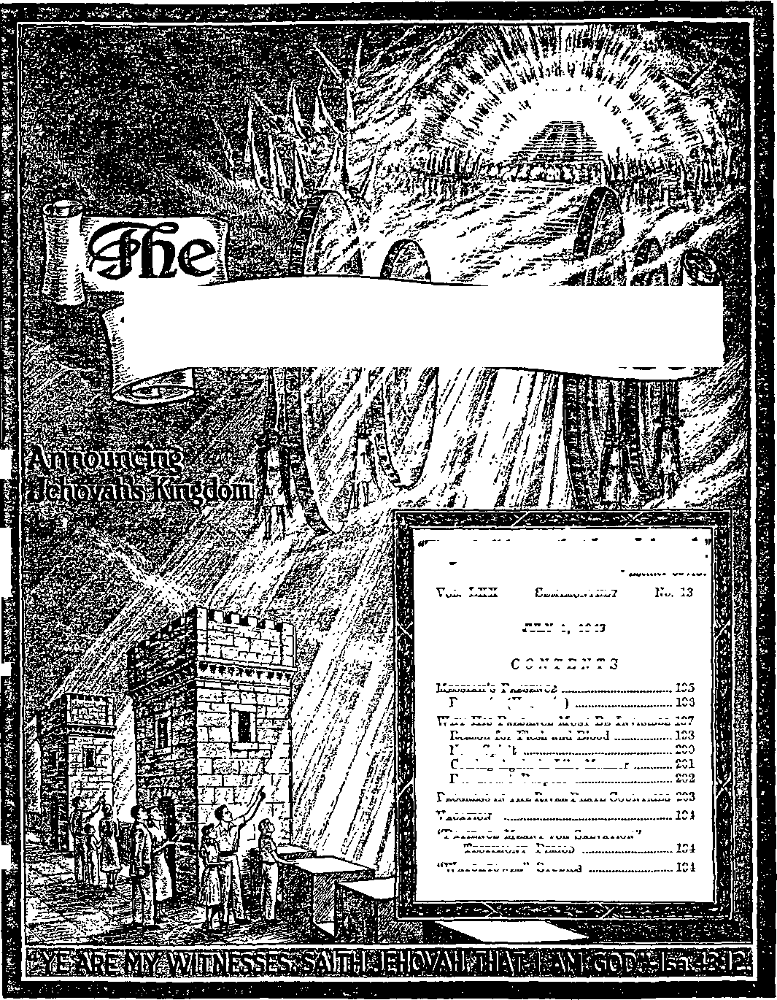

letters Editor
$
IM
t-.
W<’''TOwerS
Vol. LXX
No. 13
Semimonthly
JULY 1, 1949
CONTENTS
Why His Presence Must Be Invisible 197
Progress in the River Plate Countries 203
194
198
.200
201
202
195
196
194
194
Messiah’s Presence
Parousia (naoovoia)
Reason for Flesh and Blood
Vacation
“Patience Meant fob Salvation"
Testimony Period
watchtower” Studies
1
£■
Now Spirit
Coming Again in Like Manner
Paramount Purpose ...
Published Semimonthly By
Officers
N. H. Knobb, President Gbant Suiter, Secretary
THE BIBLE CLEARLY TEACHES
THAT JEHOVAH Is the only true God, from everlasting to everlasting, and is the Maker of heaven and earth and Giver of life to his creatures; that the Word or Logos was the beginning of his creation and his active agent in creating all other things; and that the creature Lucifer rebelled against Jehovah and raised the issue of His universal sovereignty;
THAT GOD created the earth for man, made perfect man for the earth and placed him upon It; that man yielded to unfaithful Lucifer, or Satan, and willfully disobeyed God's law and was sentenced to death; that by reason of Adam’s wrong act ail men are born sinners and without the right to life;
THAT THE LOGOS was made human as the man Jesus and suffered death in order to produce the ransom or redemptive price for obedient men; that God raised up Christ Jesus divine and exalted him to heaven above every other creature and clothed him with all power and authority as head of God's new capital organization;
THAT GOD’S CAPITAL ORGANIZATION Is a Theocracy called Zion, and that Christ Jesus is the Chief Officer thereof and Is the rightful King of the new world; that the faithful anointed followers of Christ Jesus are Zion's children, members of Jehovah’s organization, and are His witnesses whose duty and privilege It is to testify to Jehovah’s supremacy and declare his purposes toward mankind as expressed in the Bible;
THAT THE OLD WORLD, or Satan’s uninterrupted rule, ended AD. 1914, and Christ Jesus has been placed by Jehovah upon the throne, has ousted Satan from heaven, and now proceeds to vindicate His name and establish the “new earth”;
THAT THE RELIEF and blessings of the peoples can come only by Jehovah’s kingdom under Christ, which has begun; that His next great act Is to destroy Satan's organization and establish righteousness completely in the earth; and that under the Kingdom the people of good-will surviving Armageddon will carry out the divine mandate to “fill the earth” with righteous offspring, and that the human dead in the graves will be raised to opportunities of life on earth.
ITS MISSION
THIS journal is published for the purpose of enabling the people to know Jehovah God and his purposes as expressed in the Bible. It publishes Bible instruction specifically designed to aid Jehovah’s witnesses and all people of good-wllL It arranges systematic Bible study for its readers and the Society supplies other literature to aid in such studies. It publishes suitable material for radio broadcasting and for other means of public instruction in the Scriptures.
It adheres strictly to the Bible as authority for Its utterances. It is entirely free and separate from all religion, parties, sects or other worldly organizations. It Is wholly and without reservation for the kingdom of Jehovah God under Christ his beloved King. It is not dogmatic, but invites careful and critical examination of its contents in the light of the Scriptures. It does not Indulge in controversy, and its columns are not open to personalities.
Notice to Subscribers: Remittances should be eent to office in your country In compliance with regulatlone to guarantee safe delivery of money. Remittances are accepted at Brooklyn from countries where no office la located, by international money order only. Subscription rates in different countries are stated below in local currency. Notice of expiration (with renewal blank) la sent at least two issues before subscription expires. Change of address when sent to our office may be expected effective within one month. Send your old aa well as new address.
Please address the Watch Tower Society in every case.
Offices Yearly Subscription Rate
America (U.S.), 117 Adams St, Brooklyn 1, N.Y.
Australia, 11 Beresford Rd., Strathfield, N.S.W.
British West Indies, 21 Taylor St, Woodbrook, Port of Spain, Trinidad J1.25 Burma, 30 Signal Pagoda Road, Rangoon Rs. 3/8
Canada, 40 Irwin Ave., Toronto 5, Ontario *
England, 34 Craven Terrace, London, W. 2
India, 187 Love Lane, Bombay 27 Ra. 3/8
Jamaica, 151 King St, Kingston
Newfoundland, Post Box 621, St John's *
New Zealand, G. P.O. Box 30, Wellington, C. 1
Nigeria, West Africa, P.O. Box 695, Lagos
Philippine BepubUe, 104 Roosevelt Road,
San Francisco del Monte, Quezon City 2 pesos
South Africa, 623 Boston House, Cape Town
T. Hawaii, 1228 Pensacola St, Honolulu 14 *
TranslatlonB <of this Journal appear in many languages.
ALL SINCERE STUDENTS OF THE BIBLE who by reason of Infirmity, poverty or adversity are unable to pay the subscription price may have The Watchtower free upon written application to the publishers, made once each year, stating the reason for so requesting It. We are f;lad to thus aid the needy, out the written application once each years required by the postal regulations.
Printed in the United States of America
Entered as second-class matter at the post office at Brooklyn, N. Y„ under the Act of March 3, ISIS.
VACATION
So that the companies and pioneers might be prepared to carry on the field activities with the aid of Society publications, it is suggested that orders for literature be placed with the Society well in advance of August 1, 1949. This information is given now because the Bethel home and the factory will be closed from August 6 to the 21st, inclusive, so that the members of the Bethel home will have the opportunity of getting a change from their regular work. No correspondence will be handled during these two weeks as far as the Brooklyn office is concerned; so individuals ordering supplies should have their orders in to 117 Adams Street, Brooklyn, New York, no later than the 1st of August. It would be better to get them in much sooner and not wait until the last-minute rush. Companies and pioneers should send in their regular monthly report cards, and individuals whose subscriptions for this magazine expire should also send their subscriptions in immediately, regardless of the closing-down period, because they will be given immediate attention on the reopening of the offices of the Society on the 22nd of August.
“PATIENCE MEANT FOR SALVATION” TESTIMONY PERIOD
Hebe is a special opportunity for all our Watchtower readers, a time to join with hundreds of thousands of others throughout all nations in telling to others the good news of God’s kingdom that you have learned through the Scripture publications of the Watchtower Society. This opportunity is the “Patience Meant for Salvation” Testimony Period during the entire month of August. Think how much patience God had to exercise until his gospel of salvation was accepted by you, and then know that your taking part in the telling of it out to others means not only making your salvation sure but also salvation to others who hear you and accept. This Testimony Period schedules as an offer to the people any bound book and any four booklets, on their contribution of 50c. That is a very inviting offer. Will you be presenting it? Many Watchtower readers will be taking up this salvation publicity work for the first time during August. Our services are available to help all such. Apply to us for what help you need, be it territory, references, supplies, or instructions. As this month closes the 1949 service year, we want a report from all taking part in this special Testimony, either directly or indirectly. We count on you.
"WATCHTOWER” STUDIES
Week of August 14: “Messiah’s Presence,”
If 1-9 inclusive, also “Why His Presence Must Be Invisible,”
• ff 1-9 inclusive, The Watchtower July 1, 1949.
Week of August 21: “Why His Presence Must Be Invisible,” ff 10-27 inclusive, The Watchtower July 1,1949.
Vol. LXX July 1, 1949 No. 13
“And as he was sitting upon the Mount of Olives the disciples came unto him privately, saying—Tell us when these things shall be,—and what the sign of thy presence and the conclusion of the age.’1 2
—Matt. 24: 3, Rotherham; Young.
JEHOVAH God caused this magazine The Watch-I tower to be published, starting July, 1879. To this J year 1949, seventy years later, it has held the field as the only magazine on earth announcing Jehovah’s Idngdom through his Messiah, the Christ. The title itself on the front of this magazine testifies to that fact. Beginning as a monthly publication it was first called in full “Zion’s Watch Tower and Herald of Christ’s Presence”. But since March 1, 1939, it has been entitled “The Watchtower Announcing Jehovah’s Kingdom”. Zion is the prophetic name given to the seat of Jehovah’s kingdom by his Messiah, and from its very start The Watchtower has held forth that divine Government as mankind’s only hope. From January 1, 1892, this journal gave more space to the Kingdom advertising by expanding to two issues a month. During all the seven decades of its existence it has never missed an issue. At its beginning in 1879 it had a printing of 6,000 copies an issue. Today it has increased almost a hundredfold, to 575,000 copies printed of this issue. This corrre-sponds with the vastly increased importance of the message that The Watchtoiver has to give, as Messiah’s presence nears its climax at Armageddon.
2 In all the field of journalism here is the magazine that is in a class by itself, not only in announcing the long-promised kingdom of Jehovah by his Messiah, but also in announcing the Messiah’s presence. Not his presence somewhere on earth in the flesh, for that occurred nineteen centuries ago when he came as a perfect man. But his second presence as Jehovah’s immortal Son in the glory of his heavenly kingdom and accompanied by the holy angels to execute God’s will. Back there he came in lowly human form to vindicate Jehovah’s sovereignty over all the universe. How? By proving that Jehovah could put on earth a perfect man who, in the midst of an enemy world, would hold true to His rightful sovereignty and never sin against it. In harmony with that he boldly proclaimed God’s kingdom instead of taking part in the politics of this world. Secondary to vindicating Jehovah’s sovereignty, the Messiah came to give his life
as a ransom that would benefit all who wanted to become subjects of God’s kingdom, relieving them of the condemnation of their sins and liberating them from the penalty of sin, which is death. Mankind needed the restoration of God’s kingdom to deliver them from this oppressive world. Mankind needed to be ransomed from sin and death. Because of this the Messiah came nineteen centuries ago as a perfect, innocent man, born by the miraculous intervention of Almighty God. His first presence, therefore, was in human form. But while he was yet on earth in the flesh, he continually pointed forward to his second presence. It is to this second and more important presence that The Watchtower undertook to call attention, under the guidance of Jehovah God.
’ Many Watchtower readers will say: “Where did Jesus of Nazai'eth speak of such a tiring as his second presence? Our religious instructors have told us only about his second coming or advent, and that it is to be in the flesh, in the same body in which he was crucified, and that when he comes again the earth and all the visible universe is to be burned up. This leaves no room for such a thing as his second presence on earth to take place. Furthermore, if he is now present, where is he ? None of the world’s newspapers with all their news-gathering agencies have reported his presence and we ourselves have never seen him. Where then does The Watchtower get its facts for announcing his presence?”
4 In answering these questions we turn to the only valid things that can be recognized, the written Word of God and the well-known facts of recent worldhistory. While God’s prophetic Word pointed forward to the first presence of the Messiah or Christ, it devoted more attention to his second presence because of its greater importance to God and to man. Imagine the thrill it must have given Simon Peter when his brother Andrew “said to him, We have found the Messiah!’—that is to say, the Christ”. (John 1: 41, An Amer. Trans.) The Messiah to which those honest-hearted Jews had looked forward with such yearning was present. 'The Messiah, the Christ, 3. What questions on his presence will some readers raise?
4. How will we answer the questions, and with a thrill to whom? 185
is here!’ they could say. Today the proof is that the same Messiah or Christ is again present. This should impart a grander thrill to all faithful hearts that have longed and prayed for his coming, for it constitutes the biggest news, and the most important fact of our day. It offers the only explanation for all the strange and disturbing world events that have been happening since A.D. 1914.
5 In this connection we must refer to the consecrated Christian whom G-od used to found The Watchtower. He was its first editor, Charles T. Russell, a man upon whose name the religious clergy of all Christendom continue to heap reproach even to this day, thirty-three years after he died while on a preaching tour. But let us forget the reproach. If we let reproach by men influence us we would have nothing to do with Jesus Christ, nor even with Jehovah the living and true God. Remember, Jesus said to God: “The reproaches of them that reproached thee fell on me.” (Rom. 15: 3) Regardless of the man involved, we are interested in the modern events which led to the unfolding of divine truth. Well, then, in the spring of 1877, or over two years before starting this magazine, the said Russell published a pamphlet entitled “The Object and Manner of the Lord’s Return”.* The pamphlet was meant to correct many wrong views so generally held by religionists about the Messiah’s second coming. It followed after a diligent study of the Bible by a group of truth-seekers whom Russell had formed into a study class about 1870. During the years of study together they came to recognize the difference between Jesus Christ as the man who “gave himself a ransom for all” and the glorified Jesus Christ who would come again, a spirit person divine, immortal. They connected with this the fact that spirit persons can be present and yet be unseen to human eyes. At that time the so-called “Second Adventists” were expecting Christ to return in the flesh and were teaching that the world and all in it except Second Adventists would be burned up in 1873 or 1874; but their expectation concerning the second advent and the end of the world was disappointed.
PAR0US1A (nAPOYXIA)
8 Now turn to your Bible at Matthew 24: 3. If you use the Catholic Douay Version it reads: “And when he was sitting on mount Olivet, the disciples came to him privately, saying: Tell us when shall these things be ? and what shall be the sign of thy coming, and of the consummation of the world?” If you use the popular King James or Authorized Version it reads: “And as he sat upon the mount of Olives, the disciples came
* See The Time Is at Hand, page 223 1; also The Watchtower of July 15, 190'6, page 230.
unto him privately, saying, Tell us, when shall these things be 1 and what shall be the sign of thy coming, and of the end of the world?” Note that the language of both versions is similar and that both use the word coming. The word in the original Greek text from which the King James Version was translated is parousia. The word in the Latin Vulgate text from which the Douay Version was translated is adventus. For over a thousand years the Latin Vulgate was the Bible version mainly used throughout Christendom, and its use of the word adventus, meaning advent or coming, influenced the English translators in their understanding of what the Greek word parousia meant, at Matthew 24: 3 and elsewhere. So they rendered it “coming”. However, at 2 Corinthians 10:10 and Philippians 2:12, the Latin Vulgate renders that same word parousia as praesentia,meaning presence.
7 Now about January, 1876, Russell’s attention was called to something: this word at Matthew 24:3 means presence and it had been rendered so in a translation of the Christian Greek Scriptures first published in complete form in America in 1865.* This fact only confirmed the truth that Christ’s return would be in spirit. According to the Bible chronology as then understood, it was calculated that his spiritual presence had already begun, in 1874. For this reason when The Watchtower began publication in 1879 it carried the subtitle “Herald of Christ’s Presence”. Better evidence concerning his presence has since been provided in Scripture and in fulfillments of prophecy.
8 Do not think this doctrine of Christ’s second presence is based on the translation of an obscure Scripture version made during the past century. It is bolstered up by other Bible translators as well as by the basic teachings of the Bible. In 1862 the noted Dr. Robert Young, LL.D., better known for his “Analytical Concordance to the Bible” still widely used,
• This was The Emphatic Diaglott, published by its producer, Benjamin Wilson, a newspaper editor at Geneva, Illinois. The issuing of it part by part extended over a period of seven years, ending in 1863. When afterward bound together, the whole bore the date 1864. The second edition, which was actually the first edition issued at once in a complete form, was published by Fowler & Wells, New York, in 1865, but the editor’s preface was dated 1864. In its title the word “Diaglott” was used as meaning interlinear and it is therefore not a mistake for the similar Greek word “diglott”. What is “emphatic” about it is not the interlinear word-for-word translation of the Greek text, but Mr. Wilson’s translation in a column alongside. (See American Greek Testaments A Critical Bibliography of the Greek New Testament as published in America, by Isaac H. Hall, A.M., LL.B., Ph.D., Philadelphia, Pa., 1883.) In 1902 the copyright and plates of The Emphatic Diaglott were bought from the Fowler & Wells Company by an earnest Bible student and were presented by this one to the Watch Tower Bible & Tract Society as a gift to be used in furthering the truth, reducing the price so as to permit God’s poor to have this help in studying His Word.
7. Why was The Watchtower called a “Herald of Christ’s Presence''’ 8, 9. What other translations back up this doctrine, and how? published in Edinburgh, Scotland, his first edition of “The Holy Bible Consisting of The Old and New Covenants, translated according to The Letter and Idioms of the Original Languages”. His rendering of Matthew 24:3 also uses the word “presence”, and reads: “And when he is sitting on the mount of the Olives, the disciples came near to him by himself, saying, 'Tell us, when shall these be? and what is the sign of thy presence, and of the full end of the age ?’ ” Be it here said that in the original Greek text of the inspired Scriptures the word parousia occurs 24 times.3 In every case Dr. Young’s translation renders this Greek word “presence”.
’ Ten years later, in 1872, the noted Joseph B. Rotherham published in London, England, his translation entitled “The New Testament Newly Translated and Critically Emphasised”. This, too, uses the word “presence” at Matthew 24:3, and reads: “And as he was sitting upon the Mount of Olives the disciples came unto him privately, saying—Tell us when these things shall be,—and what the sign of thy presence and the conclusion of the age.”t Like Doctor Young’s, the translation by Rotherham renders all 24 cases of parousia uniformly “presence”. Thus in the third quarter of the last century we find at least two British and one American translation of the Scriptures that called attention to the doctrine of Christ’s second presence before ever it was taken up by Russell, who became the first editor of The Watch
* The 24 occurrences of parousia are at Matthew 24: 3, 27, 37, 39; 1 Corinthians 15:23; 16:17; 2 Corinthians 7:6, 7; 10:10; Philippians 1:26; 2:12; 1 Thessalonians 2:19; 3:13; 4:15; 5:23; 2 Thessalonians 2:1, 8, 9; Janies 5:7, 8; 2 Peter 1:16; 3:4, 12; 1 John 2:28.
f See Rotherham's The Emphasised Bible, now published by The Standard Publishing Company, Cincinnati, Ohio; copyrighted by him in 1897.
tower. In the first year of this twentieth century the American Standard Version of the Bible was issued. At 2 Corinthians 10:10 and Philippians 1:26 and 2:12 it renders parousia as “presence”, and in all other 21 cases as “coming”, but always with this footnote : “Greek, presence.” Reinhardt’s German translation renders it “parusie”, and in a footnote he says it means “present or to be there”. The notes in the Lausanne French translation render it “presence”; and so do the footnotes of the Spanish Hispano-American translation. The fact that the Revised Standard Version of 1946 does not follow the American Standard Version rule as to footnotes does not alter the meaning of presence which the Bible loads into the word parousia3 This we propose to show.
NE of the circumstantial evidences that Christ’s return must be in the spirit and hence invisible is this fact: Repeated expectations of the coming and appearance of him in the flesh visible to the naked human eye have always been disappointed. One of the most recent of these is the one of 19171918. World War I was reaching its climax and in the latter part of 1917, when the capture of Jerusalem by the British army under General Allenby was at hand, eight of England’s most noted ministers published in the London press a Manifesto, entitled “The Significance of the Hour”. It was republished by other papers throughout the then British Empire
1, What recent circumstance shows His return must be In spirit?
and all the world.3 The first six articles of the Manifesto read:
2 “First. That the present crisis points towards the close of the times of the Gentiles.
“Second. That the Revelation of our Lord may be expected at any moment, when He will be manifested as evidently as to His disciples on the evening of His resurrection.
“Third. That the completed church will be translated to be 'for ever with the Lord’.
“Fourth. That Israel will be restored to its own
* See the magazine Current Opinion for February, 1918.
2. What dll the first six articles o£ the Manifesto say? land in unbelief, and be afterwards converted by the appearance of Christ on its behalf.
“Fifth. That all human schemes of reconstruction must be subsidiary to the second coming of our Lord, because all nations will then be subject to His rule.
“Sixth. That under the reign of Christ there will be a further great effusion of the Holy Spirit on all flesh.”
’ This manifesto was accompanied by a request that all ministers of religion in London and vicinity who are in agreement with it should forward name and address with a view to a united meeting. On the signers of the Manifesto the London press commented: “These are well-known names, and are among the world’s greatest preachers. That these eminent men, of different denominations [Baptist, Congregationalist, Presbyterian, Episcopalian, and Methodist] , should feel called upon to issue such a statement is of itself exceedingly significant.”* But how sincere those signers were in their Manifesto is disclosed in that they since preached vehemently against the proclamation made by Jehovah’s witnesses concerning God’s kingdom by Christ. The failure of their momentary expectation to see the Lord Jesus manifested and the religious denominations translated to heaven to be forever with him doubtless affected them to this course of action. Instead of a further greater effusion of holy spirit on all flesh they witnessed a continual worsening of human society. Their wrong expectations and sore disappointment were due to failing to recognize that Christ Jesus was already then invisibly present. Like them, all religionists who expect a visible, fleshly appearing of Christ in his second coming are doomed to disappointment until they get their eyes opened when the revelation of his unmistakable presence blazes forth at Armageddon.
* Be careful, now! Go slow' Do not be hasty to scoff at our announcement of Messiah’s return as an already accomplished fact. By scoffing you are simply adding to the evidence in proof of it. The apostle Peter gave this warning: “Knowing this first, that in the last of the days scoffers will come with scoffing, walking after their own lusts, and saying, ‘Where is the promise of his presence? for from the time the fathers fell asleep, all things continue in this way from the beginning of the creation.’ ” (2 Pet. 3:3, 4, The Emphatic Diaglott; Young; Rotherham) So, instead of being a willfully ignorant scoffer doggedly holding on to false religious traditions, it would be better to consider the evidence,
5 Neither Jesus himself nor any of the Bible writers said he was coming back to earth in the flesh. In dis-
• See The Watchtower of July 15, 1926, pages 214, 215. putes the verses 1 John 4:1,2 and 2 John 7 have been used to argue for that, due to the uncertainty of the old English translation; but all the modern translations upset such an argument. The Catholic Confraternity translation of 1941 reads: “Beloved, do not believe every spirit, but test the spirits to see whether they are of God; because many false prophets have gone forth into the world. By this is the spirit of God known: every spirit that confesses that Jesus Christ has come in the flesh, is of God.” “For many deceivers have gone forth into the world who do not confess Jesus as the Christ coming in the flesh. This is the deceiver and the Antichrist.” Or, as rendered by the Revised Standard Version of 1946: “For many deceivers have gone out into the world, men who will not acknowledge the coining of Jesus Christ in the flesh; such a one is the deceiver and the antichrist.” Thus it is proved that 1 John 4:1, 2 and 2 John 7 do not refer to Jesus’ return but refer to his coming in the flesh nineteen centuries ago. Already in the first century, in the apostle John’s day, that historical fact was being denied.
reason for flesh and blood
8 There was a reason for his coming in the flesh nineteen centuries ago; there is another solid reason for his return in the spirit and not in the flesh. We produce these reasons, not from religious traditions of men and from human philosophies, but from the inspired Scriptures. In the twentieth century B.C., Jehovah God called the faithful Hebrew named Abraham into the land of Palestine, saying to him: “In thee shall all families of the earth be blessed.” Then promising Abraham a Seed or Offspring, he said: “In thy seed shall all the nations of the earth be blessed.” (Gen. 12: 3, 7; 22:18) King David of Jerusalem was a descendant of Abraham, but he died and is still dead and so did not prove to be that promised Seed. But for King David’s unbreakable attachment to the true worship, Jehovah made a covenant with him for an everlasting kingdom to continue in his offspring, and said: “And when thy days be fulfilled, and thou shalt sleep with thy fathers, I will set up thy seed after thee, which shall proceed out of thy bowels, and I will establish his kingdom. He shall build an house for my name, and I will stablish the throne of his kingdom for ever. I will be his father, and he shall be my son.”—2 Sam. 7:12-14.
7 In order for the Messiah to be that Abrahamic Seed for blessing all nations and that Davidic Seed for having an everlasting kingdom, he must be born in the flesh and be born in the line of descent from Abraham and through King David. He must fulfill this divine requirement for the vindication of Jehovah’s covenants. That is why, before telling of the 6. What pertinent covenant* did God make with Abraham and David* 7. What did those covenants require of Messiah? human birth of Jesus the Son of God, the apostle Matthew opens up his gospel account, writing: “The book of the origin of Jesus Christ, the Son of David, the son of Abraham,” and then proves his being such by genealogy. (Matt. 1:1, Cath. Conf rat.) He was no mere incarnation, like that of an angel who for a time clothed himself with a visible fleshly body to appear to men. But that he was purely flesh and blood with life from God, we read: “And the Word was made flesh, and dwelt among us, (and we beheld his glory, the glory as of the only begotten of the Father,) full of grace and truth.”—John 1:14.
8 The promised Seed of Abraham and that of David are one. We have another witness that the Messiah was such according to the flesh, namely, the apostle Paul, who writes: “The gospel of God, concerning his Son Jesus Christ our Lord, which was made of the seed of David according to the flesh.” “Now to Abraham and his seed were the promises made. He saith not, And to seeds, as of many [seeds]; but as of one, And to thy seed, which is Christ.” (Rom. 1:1, 3; Gal. 3:16) By thus having these flesh connections with those two men of God with whom Jehovah made covenants concerning his kingdom Jesus was able to meet the requirements as the Heir of the Kingdom. As David had to suffer much for the sake of the kingdom to which he was anointed with the holy anointing oil, so Jesus as the Son of David had to suffer for the everlasting kingdom for which he was anointed' with God’s spirit. Amid all these sufferings he had to prove himself faithful to Jehovah, His Superior who bestows the Kingdom according to the covenant. By faithfully enduring the sufferings without rebellion Jesus kept his integrity toward God. He repudiated Satan and vindicated Jehovah as the universal Sovereign. He proved his faithfulness to the death. In this he provided an example for his followers who are to be joint-heirs with him in the Kingdom. So Peter says: “Forasmuch then as Christ hath suffered for us in the flesh, arm yourselves likewise with the same mind.” This, then, was the chief reason why Christ Jesus came in the flesh, namely, to prove his integrity and vindicate his Father’s universal sovereignty and so establish his right to the kingdom.—1 Pet. 4:1; Rev. 2:10.
’ There was another and secondary reason why he became flesh and blood for a time. This was in order to provide the ransom sacrifice to free humankind from the effects of sin which they inherited from Adam. It was a humiliation for Jesus to become a man of flesh and blood, for this made him lower than the angels. But this humiliation proved his obedience. It is through him that his followers become the children of God, and he frees them from the power of the Devil. In testimony of the benefits of his death to his followers and to others who believe we read: “But we see Jesus, who was made a little lower than the angels for the suffering of death, crowned with glory and honour; that he by the grace of God should taste death for every man. Forasmuch then as the children are partakers of flesh and blood, he also himself likewise took part of the same; that through death he might destroy him that had the power of death, that is, the devil; and deliver them who through fear of death were all their lifetime subject to bondage. Wherefore in all things it behoved him to be made like unto his brethren, that he might be a merciful and faithful high priest in things pertaining to God, to make reconciliation for the sins of the people.” (Heb. 2:9,14,15,17) His followers are the first to receive the benefits of his death in the flesh as a sacrifice for sins; and about this it is written to them: “And you, that were sometime alienated and enemies in your mind by wicked works, yet now hath he reconciled [howl] in the body of his flesh [alive! no] through death, to present you holy and unblameable and unreproveable in his sight.” (Col. 1:21, 22) From such Scriptural testimony we see the secondary reason why he came in the flesh at his first advent.
10 Is it not true, then, that, once having become flesh and blood, Christ Jesus is always flesh and blood! Not at all 1 No more than it is also true that he should always be suffering in the flesh or always be offering his body of flesh as a sacrifice on a tree. It is not God’s will that this faithful Son should forever suffer humiliation in flesh, but God promised him eternal glorification for his faithfulness. This meant an eternal estate exalted far more highly than life in the flesh. For Jesus to retain his flesh evermore would mean for him never to have given it in sacrifice. Webster’s New International Dictionary defines sacrificing as “to suffer loss of, give up, renounce, injure, or destroy, for an end (specified or implied) regarded as superior”.
11 Now if Jesus never suffered loss of the flesh, never gave it up or renounced it, but has it forever since assuming it, how has he sacrificed it! Where is there a sacrifice for mankind to benefit from it! Jesus said: “I am the living bread which came down from heaven: if any man eat of this bread, he shall live for ever: and the bread that I will give is my flesh, which I will give for the life of the world. . . . Except ye eat the flesh of the Son of man, and drink his blood, ye have no life in you. Whoso eateth my flesh, and drinketh my blood, hath eternal life; and I will raise him up at the last day. For my flesh is meat indeed, and my blood is drink indeed. He that eateth my flesh, and drinketh my blood, dwelleth in me, and I in him.” (John 6:51,53-56) So we ask, How could Jesus’ followers eat his flesh unless he laid it down in death?
8. For what primary reason, then, did Messiah come in the flesh?
9. What is the second reason for his first advent In the flesh?
How could his followers eat his flesh and yet Jesus have it at the same time? A person cannot eat his cake and have it, too, can he? So let us be sensible and take Jesus’ words for what they say and mean. Let us not be confused any longer with unreasonable traditions of religious clergymen. Jesus said he gave his flesh for the life of the world, and he gave it forever that they might have life forever.
NOW SPIRIT
12 Ah, you say, but Jesus was raised with the flesh body in which he died on the tree, was he not? So we ask, Was he? Did any human eye see him rise in a fleshly body from the tomb in the garden of Gethsemane? Did the soldiers stationed there see him rise in the flesh? They saw the angel that rolled away the tombstone, but not Jesus. Well, you object, did not Jesus later appear to his disciples in a fleshly body that very day? Yes, and did not those angels that announced his resurrection also appear in bodies of flesh? How did they get them? By materializing them the way angels had done in the past. Well, then, why could not Jesus, with all power in heaven and in earth, also materialize human bodies in which to appear to his disciples and thus show himself alive?
13 The careful scrutiny of all his resurrection appearances proves he materialized in different bodies to suit the occasion. Why was this? Because he had forever sacrificed the body in which he died and he was resurrected as a spirit person more glorious than before he came to earth to become man. Peter saw the resurrected Jesus, and you will believe him if he says so, will you not? He says: “Because Christ also died once for sins, the Just for the unjust, that he might bring us to God. Put to death indeed in the flesh, he was brought to life in the spirit, in which also he went and preached to those spirits that were in prison.” Please note that he does not say Christ was brought to life in the flesh. (1 Pet. 3:18,19, Cath. Conf rat.) The apostle Paul confirms Peter’s words by saying: “And obviously great is the mystery of godliness: Which was manifested in the flesh, was justified in the spirit, appeared to angels, was preached to Gentiles, believed in the world, taken up in glory.” (1 Tim. 3:16, Cath. Conf rat.) He was manifested in the flesh, yes, as a man, and for that reason his countrymen were able to see him. But the Devil and religious leaders condemned him and had him put to death as a malefactor and blasphemer against God. But God saw to his justification. Note, though, that when God justified him, he was “justified in the spirit”. This was done by making him alive again, not in the flesh, but in the spirit, as deserving of the reward of a life higher than human. Thus he was vindicated in the spirit. When Saul of Tarsus saw Jesus years after His resurrection, he did not see Jesus in the flesh, but in blinding heavenly glory.—Acts 9:1-9.
14 Those who argue for Christ’s second advent in the flesh cannot produce a single scripture to show that Jesus has the body of his flesh in heaven. He was seen to ascend to heaven in a fleshly body, but after a cloud intervened, Jesus could dematerialize that body just as he had done with all the other bodies in which he had appeared to his disciples. How could he get into heaven with it ? The kingdom of God is heavenly, and 1 Corinthians 15: 50 denies Jesus’ taking a body of flesh and blood to heaven, saying: “Now this I say, brethren, that flesh and blood can obtain no part in the kingdom of God, neither shall corruption have any part in incorruption.” (Cath. Conf rat.) How could Jesus appear in God’s presence still being a man? For God told Moses: “Thou canst not see my face: for man shall not see me and live.”—Ex. 33: 20, Douay.
15 In appearing in God’s presence as his High Priest Jesus was foreshadowed by the Jewish high priests who entered into the Holy of Holies of the man-made tabernacle year after year. But did they go in there with the fleshly body of the animal victims that they sacrificed for the sins of the Jews? No, but they went in with merely the victims’ blood and this they sprinkled before the golden mercy seat in the Most Holy. Jesus, because of the perfectness of his sacrifice, was required to go into God’s presence only once. On this the apostle Paul says: “For Jesus has not entered into a Holies made by hands, a mere copy of the true, but into heaven itself, to appear now before the face of God on our behalf; nor yet has he entered to offer himself often, as the [Jewish] high priest enters into the Holies year after year with blood not his own.” So, too, Jesus did not enter holy heaven itself with his fleshly body. But as both flesh and blood are barred from there, he entered God’s presence with the value or merit of his human life represented by his blood. “The life of the flesh is in the blood.” —Heb. 9:24,25, Cath. Conf rat.; Lev. 16:14,15; 17:11.
13 In speaking of Jesus as though he had his flesh up in heaven the religionists of Christendom are certainly not apostolical, for they do not imitate the inspired apostles of Jesus. All the apostles speak of Jesus as no longer being of flesh and blood, but as being now a glorious spirit higher than he ever was before. The days of his flesh are forever past. The apostle Paul speaks of days of flesh as being past for Jesus, by saying: “Who in the days of his flesh, with a strong cry and tears, offering up prayers and supplications to him that was able to save him from death, was heard for his reverence. And whereas in-
14. Why could not Jesus appear In flesh or as a man before God? 15. What does the Jewish high priest's offering In the Holy show’ 16. How does Paul’s language show Jesus Is no more In the flesh? deed he was the Son of God, he learned obedience by the things which he suffered.” (Heb. 5:7,8, Douay) If Jesus were still in the flesh up in heaven, why would Paul speak of the days of Jesus’ flesh as being in the past when he cried, wept and prayed to God for salvation out of death? In thus speaking of Jesus’ flesh as a thing of bygone days Paul is in agreement with himself when he tells Christians: “Christ died for all, in order that they who are alive may live no longer for themselves, but for him who died for them and rose again. So that henceforth we know no one according to the flesh. And even though we have known Christ according to the flesh, yet now we know him so no longer.” (2 Cor. 5:15,16, Cath. Confrat.) Even the modern Roman Catholic translation cannot hide the fact that Jesus is no longer flesh and blood but is a spirit, not a “God-man”.
17 Is more evidence required? Then listen to this, by the same apostle to members of the “bride” of Christ: “Or do you not know that he who cleaves to a harlot, becomes one body with her? 'For the two,’ it says, ‘shall be in one flesh.’ But he who cleaves to the Lord is one spirit with him.” Not, ‘one flesh with him,’ mark you. (1 Cor. 6:16,17, Cath. Confrat.) This is not contradicted even at Ephesians 5: 29, 30, for the authentic translation of this verse given by the Jesuit translation, “The Westminster Version of the Sacred Scriptures,” reads: “Surely, no man ever hated his own flesh, nay, he doth nourish and cherish it, even as Christ the Church: because we are members of his body.” And then this Roman Catholic version dedicated to Arthur Cardinal Hinsley, archbishop of Westminster, adds this footnote: “30. 'we are members of his body’: compare 1 Corinthians 12; Romans 12:5: and here, 1:23. At the end of this verse many authorities add the words ‘of his flesh and of his bones’: but the evidence for omission appears on the whole the weightier, including as it does the Vatican and Sinaitic Manuscripts, etc.” So Jesus no longer has flesh and bones.
18 Saul was converted after seeing the resurrected Jesus, not in a fleshly body, but in spiritual glory. What did he then do?" He tells us: “When it pleased him who from my mother’s womb set me apart and called me by his grace, to reveal his Son in me, that I might preach him among the Gentiles, immediately, without taking counsel with flesh and blood, and without going up to Jerusalem to those who were appointed apostles before me, I retired into Arabia, and again returned to Damascus.” Now if Paul did not take counsel with the apostles, but retired to Arabia, then he must have taken counsel with the Lord, for he says he received his gospel “by a revelation of Jesus Christ”. If the Lord Jesus was still flesh and blood in heaven, then Paul could not here say that he did not take council “with flesh and blood”. (Gal. 1:15-17,12, Cath. Confrat.) He was hoping at the resurrection from the dead to be like Jesus in heaven. Yet when expressing his desire he says: “Indeed I am hard pressed from both sides—desiring to depart and to be with Christ, a lot by far the better; yet to stay on in the flesh is necessary for your sake.” Now if Jesus in heaven were still flesh, why would Paul speak of ‘staying on in the flesh’ as something different from being with Christ? (Phil. 1:23,24, Cath. Confrat.) Thoroughly considered, the language of all the inspired writers of the Christian Greek Scriptures is contrary to the religious tradition that Christ Jesus in heaven still has a fleshly body, in which he will appear at his second coming.
COMING AGAIN IN LIKE MANNER
” Now, now! someone will say, you are forgetting, aren’t you? What? At the time of Jesus’ ascension the angels said to his disciples: “This Jesus who has been taken up from you into heaven, will come in the same way as you have seen him going up to heaven.” (Acts 1:11, Cath. Conf rat.) Those quoting this statement to support Christ’s visible return in flesh fail to note that the angels did not say those disciples would see him come again. Nor did the angels say he would come in like form! Their language is different from that of Mark 16:12. After telling of Jesus’ resurrection Appearance to Mary Magdalene this ending of Mark says at this verse: “After this he was manifested in another form to two of them, as they were walking on their way into the country.” (Cath. Confrat.) The angels did not speak about his form at his return, but said he would come again “in the same way” as he was seen to go to heaven. Those disciples are no longer here to see him return. So fulfillment of the angels’ statement does not require Jesus to appear again in the flesh. The fulfillment must harmonize with all the other statements of Scripture that he is no longer flesh and blood and will not humiliate himself again by assuming flesh at his return. The way he went away was quiet, with no great demonstration from heaven, and without being observed by the unbelieving world. That agrees with the way other Scriptures say he would come again and be present. He told his faithful apostles before dying: “Yet a little while, and the world seeth me no more.” (John 14:19) This was because he would be resurrected spirit.
20 Contradiction in the Scriptures! someone may here cry. Revelation 1:7 says: “Behold, he cometh with clouds; and every eye shall see him, and they also which pierced him: and all kindreds of the earth shall wail because of him.” But we recall that the Revelation or Apocalypse is a symbolic book and the 19. At his ascent what did angels say about his coming again?
20, 21. Why does not this contradict every eye’s seeing him return? language in this verse is partly symbolic, so that it does not contradict Jesus’ words at John 14:19. All through the Revelation “clouds” are used symbolically and hence represent something else than literal clouds in our skies, as we shall see.
21 Moreover, the religionists who pierced him or caused him to be pierced are dead and unable to see Jesus 'coming with clouds’. The piercing refers to a piercing done by others than those who hanged him on a tree. It refers to a piercing of his faithful followers, his “body” members, at the time of his second coming. Hence the symbolic piercing is as if done to him personally. Jesus said to Saul when persecuting Jesus’ followers: “Saul, Saul, why persecutes! thou me?” In the parable of the sheep and goats Jesus said: “Inasmuch as ye have done it unto one of the least of these my brethren, ye have done it unto me.” (Acts 9:4; Matt. 25:40) Those here concerned never saw Jesus personally in the flesh to do such things to him. Now, as the piercing of him at his second coming is not done directly to him, so it is with the matter of seeing him. When it says, “every eye shall see him,” it means that in a symbolic way. It does not mean they see him with their naked human eye in a fleshly body. They see him with the eyes of their understanding (Eph. 1:18) by finally reading aright the signs marking his coming. Then Jesus will not have to ask: “Having eyes, see ye not?” (Mark 8:18) They will clearly perceive his presence.
PARAMOUNT PURPOSE
22 The purpose of his coming determines the manner of it. He plainly stated the object of his first coming in these words: “The Son of man came not to be ministered unto, but to minister, and to give his life a ransom for many.” (Matt. 20: 28) The many who were to be ransomed were human creatures. Consequently the life he must give to be a ransom must be a human life. This obliged him to come in the flesh, mortal flesh. His human life was not to be forever, and our earth is the only place to live human life. Heaven is the place for spirit life. To return to heaven he must lay down his human life, not as a penalty for personal sin, but in perfect innocence for the vindication of his Father and as a ransom sacrifice for mankind. Death once was all that was necessary for him, for by it he laid aside his perfect humanity. If he still had his flesh he would always be mortal, because flesh is subject to death. He could die again. But that he no longer has mortal flesh is proved in that he now has immortality and lives for evermore. Paul says so, with these words: “For we know that Christ, having risen from the dead, dies now no more, death shall no longer have dominion over him. For the death that he died, he died to sin once for all, but the life that he lives, he lives unto God.” (Rom. 6: 9,10, Cath. Conf rat.) By dying at his first advent as Jehovah’s Vindicator and as a ransom sacrifice, he laid the foundation for a new world, for both a new heaven and a new earth. This forms the reason why he is spoken of as the “Lamb slain from the foundation of the world”. There is no need for that foundation to be laid again, or for another to be laid to take its place. So he submitted to being slain only once.—Rev. 13:8.
22 The sacrificial feature of his High Priesthood having been accomplished at his first advent, his second coming must be for a different purpose. The changed purpose does not call for his coming again in the same form as at the first time, in human form. This difference of purpose in his second coming is plainly stated by the apostle at Hebrews 9:27, 28, where we read: “And just as it is appointed unto men to die once but after this comes the judgment, so also was Christ offered once to take away the sins of many; the second time he will appear with no part in sin to those who wait for him, unto salvation.” (Cath. Conf rat.) This time he arrives with no sin offering necessary. The one he provided nineteen centuries ago still stands good and effective.
’‘When he ascended to heaven and appeared in God’s presence with the merit of his human life, he applied it. Immediately the benefits of it began going to his consecrated followers. He bought them with his precious blood and washed them from their sins in that pure life-fluid. They were given a justified or righteous standing with God and were adopted as his spiritual children. They were thus ushered into peace with God and anointed with his holy spirit. They were made heirs of God and joint-heirs with Christ. But one thing we note that did not take place. What? Christ Jesus did not then begin his kingdom, though he did sit down at God’s right hand. His first advent, remember, was not primarily to ransom mankind by his sacrifice and provide the aforesaid blessings for his followers; it was primarily to establish his heirship to the Kingdom, the Theocratic Government which will vindicate Jehovah’s universal sovereignty and bring in a new world. Since his first advent was not marked by the establishment of the Kingdom but was marked by merely proving his right to it, his second coining must serve the purpose of establishing that kingdom. When he came and died as a man he laid the foundation of a new world. But when he returns as King, he comes to introduce that new world, a righteous world which will be without end. That is why he comes in glory as a reigning King, in his kingdom.
23 So he comes as one mightier than a mere man who is lower than the angels. He comes as a mighty 23. Does he appear again with a sin offering? What does this show? 24. What, not done at his first, must he do at his second coming'’ 25. How, therefore, must he come again, and how in like manner? spirit exalted far above heavenly angels, authorities and powers. Let us observe that when the angels said he would return in like manner as he went away, this meant he would return as a spirit. How sot Because it was as a spirit that he went away to heaven. That human body with which it was made possible for his disciples to see the beginning of his ascent to heaven was dissolved or dematerialized after the cloud received him out of their sight. He continued his ascent to heaven as the Son of God who had been made alive from the dead as a divine, immortal spirit. (1 Pet. 3:18; Rev. 1:18) Hence, in returning as a spirit, he so comes in like manner as he went away.
28 What, then, is the force and effect of all the foregoing layout of the Scriptures 1 This: that the second coming of Jesus Christ must and will be invisible to mankind; that thus he could be present for a period of time and yet the peoples and nations of earth not know about it; and, therefore, that the second presence or parousia of Christ deserves to be investigat-
26. What Is the torce and effect o£ the loregoing Scripture layout? ed by all men and women interested in a perfect World Government to determine whether his second presence has already begun. Realizing as we do the purpose of his second presence, this is a subject for study which is of the utmost importance to every intelligent creature on earth. If it can be proved that his second parousia is now on and progressing to its grand climax, then this is a fact that should influence our course of action more than anything else that is taking place in this doomed world.
21 But if his parousia is to be invisible, in the spirit, how can we know whether it is in our day, in our generation! How are we to know without a visible sign, and what is that sign! That was the very question his disciples asked him. The sign and other events distinguishing his second presence we purpose to take up in our next article of this series, to appear in the July 15 issue of The Watchtower. Be with us then as we do so, bearing in mind the fundamental points that have been cleared up already in this “herald of Christ’s presence”.
27. So what questions arise, to be answered when and where?
WHEN we left you, in our last preceding issue, we were flying northward over the fertile lands surrounding the city of Santiago, Chile. We were in the big Panagra plane and still climbing for our Transandean flight. Nathan H. Knorr, the Watch Tower Society’s president, occupied a seat near the front of the cabin, while M. G. Henschel, his secretary, was in the rear compartment. As we approached the pass which is followed by most of the traffic between Chile and Argentina we were told to fasten our seat belts because the weather is usually rough there. Far below we saw the winding trail, zigzagging through the mountains, and in it the fine black line that we knew to be the railroad. At times it disappeared, but it would show up later on the other side of a mountain. The sun was quite low in the west, which brought out a multitude of colors to display themselves on the sides of the jagged peaks.
Soon there were mountain peaks all around us. Because we were at the close of the summer season there was not so much snow on the mountains. To the left we could see many high mountains, but one was outstanding. None is more majestic than Mt. Aconcagua, the highest mountain in the Western Hemisphere (23,097 feet). Truly it was a sight to behold, for this great mountain had much more snow upon it than other peaks, indicating its height. It towered higher than we were flying and we were at 17,000 feet. And glancing downward we could see the small black-and-white spot in the Uspallatta Pass that is the Chilean-Argentine “Christ of the Andes” statue.
In this large, fast-flying plane it was not long until we saw the mountains were diminishing, melting into the tablelands of the western part of Argentina. And then we saw the important city of Mendoza. Four years ago Brother Knorr was held up a day at Mendoza awaiting the weather to clear that he might fly through the pass to Chile. So he thought of the brethren he visited while there and wondered if he would meet them again in Buenos Aires. (He did a week later at the assembly.) We began to descend for the landing at the Moron Aerodrome.
We arrived at 8 o’clock, March 21. There were about eighty of the Argentine brethren assembled at the airport to greet us, as well as some of the Gilead graduates stationed in Argentina and two en route to Asuncion, Paraguay. After patiently waiting to complete customs inspection, we were able to say hello to most of them and then we were on the way by car to the city. As we traveled toward Buenos Aires we realized what a great distance all those brethren had to travel to come to the airfield and what a great effort they had put forth. It took us about an hour and a half to get to the hotel.
At 5 a.m. we were out of bed and readying ourselves for the onward trip to Montevideo, Uruguay. We had to report to Pan American Airways at 5:45 and there we met Gwaenydd Hughes, a graduate of Gilead and district servant for Argentina, who had been scheduled to travel with us in Uruguay, Argentina and Paraguay to act as interpreter for Brother Knorr.
URUGUAY
At 7: 30 we boarded a DC-3 and soon we were flying high above the flat country of Buenos Aires province and out over the muddy waters of el Rio de la Plata or River Plate. The plane flew above the water a few miles to the south of the Uruguayan coastline and as time passed we could see the water was becoming bluer. When we approached Montevideo we saw the famous Cerro that rises to the west of the harbor and then the magnificent white beaches bordering the sea, .flanked by the modern hotels and homes, the resorts for which Montevideo is famous. We passed by the city and descended at the Aerodromo Nacional de Carrasco, to the east of the city. We were greeted by a great crowd of Witnesses, many of them graduates from the Watchtower Bible School of Gilead. Forty of the brethren had hired a bus to make the trip from the city and to ride back with us. It was a very pleasant journey, being with so many brethren and hearing them singing their songs in Spanish, as we rode through the woods of Roosevelt Park and down to the edge of the sea. For miles along the coast there are wonderful beaches. We drove along the wide boulevard called La Rambla which separates the fino residences from the beaches. Along the way we saw a school of porpoises close in to shore. The trip, with the flood of sunlight and the soft breeze, was highly enjoyable for all of us.
We found a ready welcome for us at Joaquin de Salterain 1264, the location of the missionary home and Branch office of the Society and felt right at home immediately. The big sunlit patio that served as Kingdom Hall and the hustling brethren gave all the evidences of the fact that there was to be an assembly in the city on the coming week-end. The morning went fast and pretty soon the call came for dinner. This sounded good to our ears because the last real meal we had had was in Santiago, Chile, about 24 hours before. Meals had not been served on the plane, nor was there time to eat a meal in Buenos Aires the night before. We got up too early for breakfast.
There were many things to do in connection with the Branch organization and the problems of the missionary home. We also had to complete arrangements for the trip to Rivera on the following day.
Wednesday, March 23, came warm and clear and everything was suited for the flight to Rivera by Pluna Airline. J. D. Powers, the Branch servant, accompanied the three of us to Rivera, which is the important city in Uruguay across from Santa Anna do Livra-mento, a Brazilian twin city. We left the missionary home at noon and went to the airlines office. After a wait of almost an hour we were taken by bus to the airfield, where we waited a while longer. Finally we were permitted to board the plane and were on our way to the north. On the way Brother Powers told us of his first visit to Rivera and how he had advertised the meeting to be held in the public park and notified the police of the meeting. On that occasion there was only one stranger who came to hear the lecture and Brother Powers was wondering how he would give the public lecture, but just a few minutes before the time of the public meeting fifty policemen came marching up, led by a captain, and they wanted to know where the meeting would be. Brother Powers told them that there was to be a public meeting but no one came except this one stranger. The police were detailed to be there for an hour, so Brother Powers gave his public lecture to the fifty policemen and one civilian. This story, of course, aroused our interest in what was going to happen this time in Rivera after the five Gilead graduate sisters had been working for nine months and in the past few days had been advertising a public meeting.
It did not take long to reach Rivera once the plane got started, and we became aware of the fact that the plane was losing altitude as it circled above the farmlands, but we did not see any airfield. As the plane dropped lower and lower we knew there must be a field near by, and when we finally landed we were surprised at the place because the field was rough and rolling, instead of smooth and flat. Passengers for Rivera were directed to taxis that were waiting and their baggage was taken out of the plane and put in the taxis. Then for about a half hour we four travelers had a really rough ride into town, The roads were unpaved, suitable for horseback riders or carts; but the creeks were forded and the sandy places passed. We saw a number of gauchos as we went along, passing first on one side and then on the other side of the concrete pillars that marked the borderline between Uruguay and Brazil. When the road began to improve we noticed the houses that indicated we were nearing the city’s outskirts. In the heart of the city we found there were paved streets and modern stores; we were quite surprised to find such a large city. It was a delight to see the smiling faces of the five Gilead graduates and some other brethren from the local company as we drove up to the Pluna office. With only a brief greeting we left them, following their directions to the Hotel Casino, which is just across the street from Brazil. The border between the two cities is marked there by a narrow grassed section in the middle of the broad road, with neither fence nor guards. We found the hotel to be very modern and probably it is kept up well through the gambling concessions that are run there. There had never been a company of Jehovah’s witnesses in Rivera until just recently, but there was a company of Jehovah’s witnesses in the Brazilian eity and these brethren were expected to come over to Rivera for a 6 o’clock meeting with the brethren.
After getting our rooms at the Hotel Casino we walked through the city to the missionary home at Avenida Brasil 800, arriving there at 4:30, in time for a meal before the assembly began. The home was very new and the Kingdom Hall connected to it was quite nice. The sisters had crowded 100 seats into the hall for the occasion. They were hoping that all of the seats would be filled during the public meeting, because they had gone to a lot of work in arranging for the public meeting. They had distributed handbills and had used the “sandwich signs” for advertising the meeting, something that had never been seen before in the city. They had also engaged a sound-truck to tour the city advertising the meeting.
Twenty brethren gathered at 6 p.m. and Brother Henschel spoke to them extemporaneously, using Brother Powers as interpreter. It was noticed on the Kingdom Hall chart that now there were 14 publishers working in Rivera. What would the public meeting bring 1
The pubEe meeting had been advertised for 8 p.m. A few minutes before 8 the Kingdom Hall was filled and many were standing. It was fortunate that the Gilead graduates had arranged to have the sound-car equipment available, and a little while before the meeting the loud-speakers were hung in two trees outside on the street. When the meeting started many people were found outside of the hall peering in through the doorway and window, but they heard through the loud-speakers. The sidewalks around the hall were filled and people were standing in the street and across the street as the crowd continued to grow. Passing buses and cars would stop a few minutes to see what was going on. Brother Knorr spoke on “It Is Later than You Think!” and Brother Hughes interpreted. It was heard by 380 people. Much Eterature was taken after the meeting and much interest was shown by questions asked. The police had been notified of this meeting and this time three were sent to keep order, which was very easy to do because the group attending the lecture were very attentive and orderly; they had come to hear a talk on the Bible.
It is easy to appreciate how much joy the five Gilead graduates had over this big meeting after all their advertising, and this was a crowning event to all their efforts for the past nine months’ service in Rivera. It also brought great joy to us, for it showed the Lord’s rich blessing on this missionary activity.
The brethren from the company in Santa Anna do Livramento were very happy for the opportunity of attending the meetings because they said they would not be able to attend the April assembly at Sao Paulo, Brazil, seven days’ journey away. It was a blessing for their company to hear from the brethren from other lands.
The next morning was set aside for baptism services. Twentyseven came to hear the Branch servant give a discourse on the subject, and then 9 expressed the desire to be immersed. From the Kingdom Hall we walked southward and found our way out of the city to a Httle farm of a person of good-will where a stream flowed lazily through a pasture. It was there that the brethren were immersed in water. On the way and during the rest of the day there were many things to talk about in connection with the work in the city and the missionary home. There was packing to be done, too, because all of the missionaries were going to attend the assembly in Montevideo during the coming week-end. Tickets were purchased for a party of nine, to leave at 5:15 that afternoon. Strange as it may seem, the tickets could not be purchased before 3 o’clock. Because there are no customs barriers at the border, all of the luggage had to be checked by customs officers before anyone from the city was allowed to board the train. At 5:15 we were on our way, the start of a journey that took us about 15 hours to reach Montevideo. Police inspectors came through the train to see if we had proper travel or identification papers. We had come to Rivera from Montevideo by air in an hour and a half, but by train the trip required 15 hours. Before the sun went down we had opportunity to see some of the fertile, green range country and hills of northern Uruguay, where it is said almost any crop will grow.
When we arrived at the Central Station in Montevideo on Friday morning, March 25, our train was a little late. The convention was under way, but some of the brethren had come to meet the train. We learned that we were not the only ones who had come from out of the city. There was a sister from Argentina who was present. Two trucks had been driven from Paysandu to Montevideo and they had brought brethren from Salta, Paysandu and other places west and north of Montevideo. There were many Russian brethren among these and they had come prepared with much food, including whole animals and many loaves of bread. Their trucks had signs on them to advertise the public meeting that was scheduled to be held in the well-known El Ateneo de Montevideo, Plaza Cagancha 1157, on Sunday evening. There was much for the brethren to do in advertising and witnessing from door to door that morning. All sessions prior to the public meeting were being held in El Conservatono Musica “La Lira”, an old building in the heart of the downtown section. The building was undergoing some alterations, and so there were some inconveniences, but the brethren demonstrated much joy and seemed not to notice those small things at all.
By Saturday the attendance had grown to 280. Since there were to be discourses all day on Sunday, the advertising work had to be all finished on Saturday. So the brethren put out all of their handbills and walked through the city with their “sandwich signs” advertising the meeting. They were having a very good time.
Sunday afternoon Brother Knorr spoke through two interpreters to 25 of the Russian brethren at the Kingdom Hall, while other brethren were assembled at the Lira. At 4: 30 a baptism talk was given at the Lira, and when it was asked how many expected to be immersed it seemed that half of the audience so indicated. A bus had been hired for the occasion, but the bus was not nearly large enough, since there were 73 persons to be baptized. One of the trucks that had been driven in from Paysandu was pressed into service. The two vehicles transported the brethren to Playa Ramirez, one of the popular beaches near the amusement park, where the brethren were baptized. It was certainly good to see so many taking their open stand for the Kingdom and resolving to carry on the ministerial work along with the many others that had begun preaching in Uruguay.
The time set for the public meeting in the evening was 7 o’clock. Four years before Brother Knorr spoke in one of the small halls of the Ateneo; but this time the brethren had arranged to get the largest auditorium, which seated 400. This proved to be much too small, as there were 592 in attendance, filling both the large hall and a small one. On the part of all present real interest was shown in the signs of the times, which prove we are living in the last days of this old world and that the final day of destruction of this wicked world is not too far distant. Many of the public and people of good-will remained for a second discourse to follow in a half hour, which was the concluding talk of the convention by Brother Knorr.
All of the brethren were delighted with the success of the assembly and they believed that this would mark another forward step in the increase of the work in this small country of two million people. Excellent progress had been made since the president’s last visit, in 1945, when there were 33 publishers. Since then a number of missionaries had been sent and more companies organized and recently there was a new peak of 310 publishers for the country. It is believed that continual advances will be made in the years to come.
A number of Uruguayans have entered into the pioneer service and some are qualified to come to Gilead. They are looking forward to being called, perhaps in 1950.
Monday and Tuesday were spent handling problems in connection with the missionary homes. A visit was paid to the missionary home at Espinillo 1423, at the north unit in Montevideo. After spending a week in Uruguay we had become quite used to seeing people standing or sitting about taking their mate. The gourds and bombillas and yerba were part of the life of the people, but we did not have time to acquire the habit.
Tuesday evening at 8:30 we were on our way again. A man of good-will took ns in his car to the aduana and the pier where the steamer “Ciudad de Montevideo” was preparing for the trip to Buenos Aires. A stateroom had been reserved for Brothers Knorr, Hughes and Henschel. Here we got the biggest farewell of our trip, when more than 75 brethren from the Montevideo units and from Paysandu came to the docks. We had this further token of the great love that binds the Lord’s servants together, and we waved good-bye until we could see them no more.
There was a good wind that night, and so we rolled some in our berths as we crossed the wide La Plata to Buenos Aires. We pulled into the narrow harbor and then two tugboats towed the steamer backwards to the quay, where we arrived at 8 a.m. on March 30 to find some of the brethren awaiting us, the 15 welcoming us again to the land of Argentina.
The day was devoted to the Branch work and making arrangements for the advancement of the interests of the Kingdom in Argentina. There were convention details to work out. And the evening we spent at the missionary home with the six brethren from the United States and some Argentine brethren, as well as the Branch servant. Everyone was looking forward to the big week-end convention at Les Atnbassadeurs.
OF WHAT IS ARGENTINA AFRAID?
On Thursday, March 31, the Branch servant, Brother J. Muniz, received notice from the police that the permission to hold the assembly and public meeting at Les Atnbassadeurs was revoked. Several weeks before permission had been obtained from the police to use the hall, but now one day before the assembly was to begin the brethren were notified it was withdrawn. Permission had been obtained from the police for the distribution of handbills and copy for all advertising material had been approved by the police, but suddenly and without any good reason we could not use that hall. The matter was taken up with a prominent lawyer and he went to see the police. He was told to go to the Ministry of Foreign Relations and Cults. The brethren were told by the police that they could have the assembly in their own hall where regular meetings were held throughout the week and on Sundays. At no time in the past had there been any disturbance at the Kingdom Hall at Calle Honduras 5648 and meetings had been held there for eight years running. There were no other halls that could be rented; so the only thing that could be done was to use the Kingdom Hall, which would be much overcrowded. It also was an inconvenience for many of the brethren because on Friday morning many of them went to the Les Ambassadeurs and then had to travel to the Kingdom Hall. The assembly began on time and On Friday evening there were 672 in attendance. During Saturday and Sunday the crowd continued to increase; they had come from all parts of Argentina.
During the first day of the assembly, Friday, Brothers Knorr and Henschel spent most of their time running around the city of Buenos Aires trying to comply with a new decree of the Peron government that came into effect April 1 for the control of the movements of all aliens in Argentina. We had to register with the immigration officials and also get permission to leave the country on Monday, April 4. This meant that we had to do everything on Friday in regard to this new registration. We had learned of the decree before and had tried to do something about it the first day in Argentina, but the immigration officials and police said they knew nothing about it and we must come back at 8 a.m. on Friday.
We did as we were told and when we reported to the immigration offices at 8 a.m. on April 1 to get a mere card, which we thought would be all we needed to leave the country, we had to wait more than an hour before anyone could figure out what to do. Then when they finally handed us the cards they told us we must report to the police in our section of the city. We left the immigration office at 9:30 that morning and started to the police station. When we got there the police were rather irritated that we had come, because they had not been informed as to the details of the law and they did not know what to do. So they told us to come back at one o’clock. We tried to leave the police station, but when we got to the esit a policeman on guard there would not let us out. When you are once inside a police station in Buenos Aires you cannot get out without special permission. So we had to return to the office and ask the man at the desk to let us out and notify the man on guard that we were going.
There were still things to do in connection with the possibility of using the Les Ambassadeurs for the public meeting, and so we went to see the lawyers. It was explained to us that recent decrees of the government provided for the close control of religions and sects. We would have to get permission from the Department of Cults if we were to have the use of Les Ambassadeurs. The application was filed, but that was as far as the matter ever got; there was no signing of it.
When we got back to the police station it was 2:30 p.m., and this time we found a number of persons had come to see about registering and everyone was being told to come back manana. That would be too late for us, because we had an assembly to care for, so we told them we would wait until they got ready to fill out the forms; and the police in charge were gracious in the matter and told us that as soon as they had read the instructions they would fill out the forms. So about a half hour later they completed the first card, that of Brother Knorr. Without this police certificate which permits one to leave the country we could not get our airplane tickets for Paraguay.
We had been to the ALFA office before and now we returned with a feeling that they would surely sell us tickets. But even though we had all the required documents and a visa for Paraguay, this was not enough. We were told we had to have the visas confirmed by the local consul general of Paraguay; so this took us on another trip through the city to the Paraguayan Consulate. Then we went back to the airlines office, and finally we got our tickets for traveling the following Monday.
The two days that remained of our time in Argentina we spent at the Branch office and attending the assembly. Saturday evening Brother Knorr spoke on “Love” to 772 brethren. The hall was packed out and the patio was filled. About half of the brethren had to stand through the entire evening program. It was only by arranging for plenty of standing room that the brethren could get into the hall. After that evening meeting the invitation was extended to the brethren who were pioneers to fill out preliminary application forms if they wanted to go to Gilead, and when the matter was explained to them 16 filled out forms expressing the desire to attend.
The brethren were informed that word had been received from the Society’s lawyer that the Department of Cults would not allow the use of Les Ambassadeurs hall for Sunday. There was no indication as to what was behind the cancellation of the use of the hall after permission was granted to rent it and use it But it was brought to light how people are often treated by the police. It seems to be their policy to cancel things on the last minute so that no other arrangements can be made nor protests rendered. They had done it to others too. We made all the protests we could possibly make and tried to get to the bottom of the matter, but it just seemed that no one knows anything about it. The brethren were told that the public meeting would be held in the Kingdom Hall and that we would use the roof to accommodate the crowd, if necessary. So the brethren had to scurry around and tell the people of good-will that the public meeting would not be held at Les Ambassadeurs. No handbills had been distributed although they had been printed at* great expense to the Society. Placards were not used. The full rent for the hall had been paid, and whether this is returnable is very doubtful.
But the information had been given by the police that ‘it is all right to have meetings in your own hall’, and so the assembly proceeded at the Kingdom Halt The first thing in the morning of Sunday was the baptism. There was a good crowd present. Seventy-six symbolized their consecration to serve God. The immersion took place in the La Plata river.
The public meeting was scheduled for 4 p.m., and there were 1200 persons in attendance. The hall was more than packed out. The patio was filled to the gate and there were hundreds on the terrace roof. The weather was warm and the skies clear. All of the audience were served by loud-speakers. The crowd was most orderly and intensely interested in what was being said by the speaker through the interpretation by Brother Hughes.
At 4:40 in the afternoon a policeman and a man in civilian clothes pushed through the crowd up to the platform and said that the lecture must cease immediately. The speaker stopped talking and asked the reason why the action was being taken. We were told we were not allowed to go ahead with the public meeting. A brief explanation was given to the inspector and we asked him if we could not call up the police station where permission was granted to have the meetings in our own hall. The inspector said we could, and he went with one of the brethren to the Society’s office in another part of the building to do the telephoning.
In the meantime the audience was asked to remain quiet and not to leave their seats or place of standing, and then they began to sing Kingdom songs while waiting for the word from the inspector as to whether or not the meeting could continue-. Brother Knorr and Brother Hughes remained on the platform during this interruption, and finally Brother Knorr was called to the office by the police for information as to why he was talking and also for credentials and rights for being in the country. The police would have it no other way than to bring everyone down to the police station, and, no matter whom we telephoned to get assurance that our meetings were approved because it was our regular meeting place, we could get no one that would say we were in the right. By this time there were a dozen policemen outside the building, and shortly 30 more arrived in an open police wagon. They drew their guns and carried tear-gas bombs. No one was allowed to leave.
Then they started to load the men and women into the wagon and take away about 30 at a time to the police station. What was happening to them we did not know. The inspector told us they would probably take them to the police station and get their names and let them go free. But we soon learned that we could not believe anything that the police said. Every person that was put into the police wagon was searched and “frisked” by four different policemen who were evidently trying to find arms.
The brethren and all of the people of good-will that attended the public meeting were very orderly and there was no commotion or disturbance in the hall at all. They just waited their turn to be taken to the police station. It soon dawned upon the police that this was going to take them probably all night to haul everyone to the police station in one wagon, for by this time they learned the roof too was filled; so they got busy and began to let the women with children go, and finally they let all the women go and took only the men. Finally even this proved to be too great a task. The police wagon finally ran out of gas and then they locked all of the rest in the hall and kept a guard around the hall for some hours.
In the meantime the Branch servant and the directors of the local organization, La Torre del Vigia, along with Sister 0. Estrada, the stenographer of the office, and Brother Knorr, the speaker, seven in all, were taken in a special car to the police station. When we arrived we found hundreds of brethren and people of good-will lined up in the courtyard of the police station. They were being booked by the police and taken oS somewhere else. While truckload after truckload of men were being brought in, we were questioned. The bringing of people finally stopped when, we were told, the gas supply ran out.
The five directors of the local Society, Sister Estrada and Brother Knorr were booked by the police and put through the same routine that all the others had gone through. Finally they wound up in the courtyard where hundreds of brethren were standing waiting to have their cedulas and identification papers checked. Here Brother Knorr was fingerprinted and a full record taken of his status and then he was returned to the investigation room where a written statement had to be given as to why the meeting was held and why we were present. The police were rather insistent on writing the statement themselves and having people sign it, but the brethren would not allow this. Finally the police gave in and let us write our own statements. Brother Knorr had to talk through an interpreter but he was not allowed to use any of the brethren; so a stranger was called in who happened to be there from Puerto Rico. We wanted to speak to the chief of police about the matter, but we were just told to wait.
The group of 7 were taken to the police station around 7 p.m., but it was not until after midnight, having gone through all the routine that was required, that the Branch servant, Brother Muniz, together with Brother Knorr, got to speak to one of the principal inspectors and the chief of police on the matter. Things were explained, but what impression that had upon the police is indeterminable.
Later on in the evening more brothers and sisters were brought in, until approximately 500 of those attending the meeting, whether brethren or strangers, went through a routine of being booked and interviewed. The rush was so great that a eall had to be made to other police sections from Section 31 to bring in police stenographers and typewriters and help to take care of the matter. Before the evening was over Brother Knorr had to be fingerprinted two more times, bringing the total to four. It seemed as though every police officer in the station made a record of his name, age and place of birth, and all the other data. Why the police should be so fearful of a Bible lecture in Buenos Aires is hard to understand; however, the Peron government does not want such public meetings and Bible discussions, and neither does the Roman Catholic Hierarchy. It is interesting that the chief of police that took Brother Muniz to the police station stopped at the Catholic church on the way to the police station and told the driver to wait for a few minutes, he wanted to go and see the padre. He was gone ten minutes and then took Brother Muniz to the police station to book him.
It was not until two o’clock in the morning that all of the people that were brought to the police station had been booked and put through the routine, and by that time evidently the police had made up their minds what they were going to do with us. They decided to let us go after we signed another paper.
All of the ones taken to the police station were held in a large open courtyard. There was no place to sit down; they had to stand. It was very cold and damp. No one had eaten anything since noon, and many of the brethren had missed their noon meal so that they could get their people of good-will and bring them to the right place for the assembly. So it can be said that the majority of them were cold and hungry and very tired at four o’clock in the morning, when Brother Knorr and the special group confined with him were allowed to leave.
The New York Times of April 14 and 15 published a very brief and very garbled report, being in error as to the size of the audience and by reporting that the permission required for the meeting had not been obtained. This Times report is photographically reproduced below, along with one from the April 12 issue of the New York Times informing that Perdn has instituted “Voice of Argentina” short-wave broadcasts to the United States to “report honestly the results of our hard battle for a better country”. Doubtless honest reports on curtailed freedom of speech and assembly and worship will not be beamed to other lands. The two Times reports follow; also the Times’ reply to the Society’s vicepresident, who wrote submitting them an eyewitness report from Buenos Aires to publish, besides the Society’s own news release on the matter:
(From Lite Bdlttoctt of Yesterday** Tl»e« I JEHOVAH WITNESS FREED
Argentine Police Release Head of U. S. Tract Company
■peck! to Tmz Nrw You Turn, BUENOS AIRES. April IS— Nathan Homer Knorr, president of the Watchtower Bible and Tract Society of Brooklyn, the publishing branch of Jehovah’s Witnesses, was arrested along with an audience of more than 200 persona when he tried to give an address here recently. The police say that a permit required for the meeting had not been obtained.
Mr. Knorr, who is now in Rio de Janeiro, and all the others were released shortly after their arrest.
Neither the police nor members of Jehovah's Witnesses here are eager to talk of the event, which took place a week ago Sunday, and no mention of it has been made in the press.
PERON INSTITUTES SHORTWAVE TALKS
In Program Beamed to U.S., He Says ‘Voice’s* Aim Is to Give Honest Data on Argentina
By VIRGINIA LEE WARREN SptcUl to Tn Nrw York Time*.
BUENOS AIRES, April 11— Juan Perdn, President of a country where the economy is largely under Government control, sang the praises tonight of private enterprise in a broadcast to the United States. He also said the purpose of the new daily shortwave program is “to report honestly the results of our hard battle for a better country and for a humanity closer to its essential duties.”
The broadcasts, to be known as the "Voice of Argentina,” had been planned to begin May 1, but they got an unexpectedly impressive send-off tonight when both Sedor and Sellers Perdn spoke.
TIMES SQUARE, NEW YORK IS, N. V. LAcxawuou 4-1000
April 28, 1949
Dear Mr, Franz;
We appreciate the courtesy and interest that prompted you to send us the enclosed contribution, but regret our inability to make use of it.
Sincerely yours,
TEE NEW YORK. TIME
letters Editor
It was learned later that when the inspector first came and told Brother Muniz that the meeting was suspended Brother Henschel had gone across the street from the hall to try to take some pictures of the police action and at the time the police came and closed the gates he was still across the street. Several of the brethren who had cars had been bringing people from the Les Ambassadeurs to the Kingdom Hall and it was thus possible for several of the brethren to be on the outside. One man who arrived late, an American citizen, was talking to Brother Henschel, asking for information about the meeting. He was told it was a Bible meeting and sponsored by Jehovah’s witnesses. After he stood for a few minutes across the street his curiosity got the better of him and he crossed over to see what was going on. The police guards permitted him to join the crowd in the patio and, after about half a minute, when his curiosity was satisfied he asked to get out, but the police refused him and made him remain inside. He was among those in the first wagonload taken to the police station.
Another man who had been brought over to the meeting from Les Ambassadeurs was an Austrian. He had been through many things in Europe during the regime of Hitler and he was very much interested that such a Bible meeting should be interfered with. He said that he was interested to hear the lecture and to learn more about the work of the Watch Tower Society, that he knew very little of it. He had come to settle in Argentina with his mother’ to escape the troubles of Europe, but now that he saw this action he was not so sure he wanted to live in Argentina. He said that it was the same thing as he had seen in Europe under fascistic and Nazi domination and now that he had seen this he would have to consider more closely whether the freedoms of all the people in Argentina would soon disappear.
As more police arrived they were ordered by their superiors to clear the block of the hundreds of people who had gathered in the streets, and so we were dispersed to the next block. But there were many more people who gathered on the corners half a block away and cars would stop to see what was going on. It seemed as if there was an army in front of the Kingdom Hall. Those brethren who were outside stood together and watched, waiting to see the turn of events and what they could do.
Brother Henschel got in touch with Brother Knorr by telephone conversation and talked over the situation before Brother Knorr was taken to the police station. Brother Knorr told him to continue on with the journey to Paraguay if Brother Knorr did not show up before morning.
However, by five o’clock in the morning Brother Knorr returned to the hotel, and just had time to pack and eat some breakfast. He had received assurance from the police that he would not be interfered with on leaving the country. Then it was almost time to leave and so the baggage was taken to the hotel lobby and the brethren who were to meet us came with taxis. We traveled in two taxis to Puerto Nuevo where the big ALFA flying boats take off. There were a few brethren there who gave us a cheery good-bye for the trip to Asuncion. Brother Hughes was with us.
On our flight northward in the large seaplane we had time to reflect on what had happened and to appreciate the conditions under which the people are living in Argentina. What a beautiful city Buenos Aires really is! but would it soon become a prison without walls? Our tourist guide published by the Buenos Aires Branch of The First National Bank of Boston said, “Freedom of speech, press and religion are provided for in the constitution.” Evidently ‘provided for* does not mean they exist in reaEty, considering our experiences. We wondered what course would be taken by General Juan D. Perdn in the days to come, in view of his speech reported on in the Buenos Aires Herald of Sunday, April 3, 1949, as follows:
“Civil Strife Will Precede International Conflict” Pres. Peron on How the Next War Will Begin
The next war won’t begin with miEtary operations but in 90 percent of the countries which will eventually become involved it will start with strife among the people themselves which may easily lead to civil war. H. E. President Peron said yesterday when addressing senior officers at the inaugural session of their staff college course. . . .
He went on to say:
“It will be the responsibiHty of a government to see that civil strife does not precede a war. This can be done by avoiding splits among the masses so that chaos does not overcome a country.
“The time to do this is in peace, and it can be achieved by harmony between the armed forces and the Government.” For that reason, said the President, he supported the idea of joint study by the armed forces and ministerial representatives.
He also emphasized the necessity for co-ordination with the armed forces of the interior. [End of quotation]
Why is a nation afraid to have the gospel of Christ preached? That can only do good. But we can understand why when we appreciate that the Bible says the Devil is the god of this world and that he is trying to turn all people away from Jehovah, using every means to subject the people to his rule. (2 Cor. 4:4) Through the words of John we see it is a time of “woe to the inhabiters of the earth and of the sea! for the devil is come down unto you, having great wrath, because he knoweth that he bath but a short time”. (Rev. 12:12) What a blessed privilege it is to be standing for righteousness! To see the brethren suffering for righteousness is another sign of the end of the old world.—Matt. 24:9.
While conditions are made hard for Jehovah’s witnesses in many countries of the earth, even as they are in Argentina, the true servants of God will not slack their hand in the privileges of preaching the gospel. It was good to hear the brethren in the poEce station courtyard express their determination to go forward with the work. They were not dismayed at all, but rejoicing in the witness that had been given. In 1945 when Brother Knorr was in Argentina there were 363 pubEshers for the Kingdom in the field, and since then the organization has been blessed of the Lord and has grown to 1,149 publishers, which is the latest peak. This disturbance in Buenos Aires by the poHce will not hinder nor stop people from doing their own thinking, and people of good-will will search more diligently in the Lord’s Word to find out what the signs of the times mean. Many will come to the conclusion that it is later than they thought and will take their stand now, regardless of the consequences; for if they desire to Eve in the new world they will have to be ministers for the Kingdom of God in the old world that still exists. It is sincerely beEeved that the work will progress in Argentina and that the present pubEshers will not slack their hand. While many people of good-will have been ■hocked and amazed at what happened at the first meeting of Jehovah’s witnesses they ever attended, still they are not going to stop thinking nor talking.
The morning papers on Monday, both English and Spanish, in Buenos Aires, according to reports, had nothing to say about the poEce action. We were told that things Eke this are not reported; but it will certainly not stop the 1200 people that attended the lecture from talking. And when 1200 people start talking all over Argentina news will get around. It will be interesting to watch Argentina to see if it will follow the same pattern as Hitler did. If the rulers of Argentina were wise they would also consider the results to those who take away the freedom of the people. Free speech never hurt a country with good rulers. It is throttling of free speech and freedom of worship that has brought about the downfall of nations and peoples for centuries. Jesus said: “The truth shall make you free.” (John 8: 32) The truth will Eve.'The truth cannot be destroyed. Jehovah’s witnesses in Argentina, by the Lord’s grace, will move ahead in the good work of bringing comfort to the people by preaching the message of God’s kingdom, the only hope for the world.
What features highlight The Watchtower from its start to now?
5. What pamphlet by the s-gmp editor preceded The Watchtower Why? 6. What Greek word came to be rendered “coming", and why?
12. Did any see Jesus raised flesh? How did he appear In flesh? 13. Did he appear in the same body or different bodies? Why?
17. Is his bride united to a Christ of flesh and bones? Why’
18. How did Paul’s consultation and desire show Jesus not flesh?
22. What purpose determined the manner of his coming and dying?